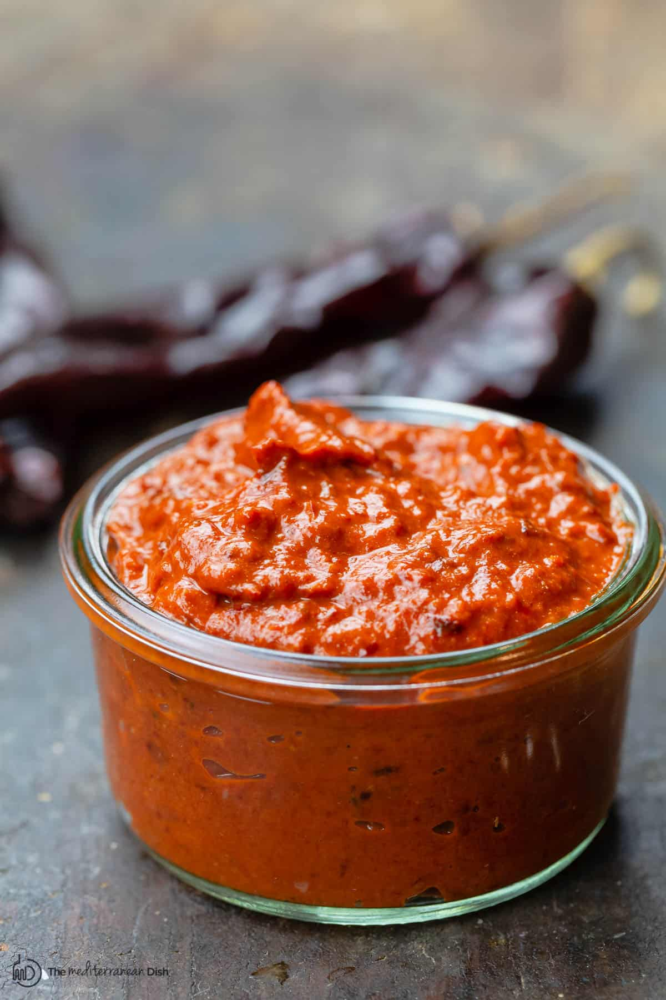

Odin Recipes
Hot Harissa Sauce
This is a recent creation of mine. It is spicy and creamy
and pairs well with anything mediterranean.

Description
This is a quick recipe for a spicy harissa-based sauce that pairs great with mediterranean meals or just used for dipping
Ingredients
- 1/2 cup hot Harissa paste
- 2TB tahini
- Juice of 1/2 lime
- 1tsp chili powder
- 1tsp cumin powder
- 1/2tsp garlic powder
- 1/2tsp onion powder
How To make
- Place all ingredients into a bowl or sauce dish
- Using a fork, mix until well incorporated